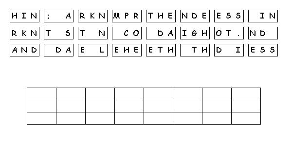

Read the lessons at the Vanderbilt Library website: http://divinity.lib.vanderbilt.edu/lectionary/AChristmas/aChristmas3.htm
Read
the lessons at the Vanderbilt Library website:
http://divinity.lib.vanderbilt.edu/lectionary/AChristmas/aChristmas3.htm
Sermon Summary
|
What Scripture is the Sermon is based on? |
_______________________________ |
|
What is the main point of the Sermon? |
_______________________________ |
|
Write down any figures of speech used by the preacher (Metaphors, Similes, hyperbole) |
_______________________________ |
|
Write down any new, unusual or particularly interesting words the preacher uses |
_______________
|
Next week:Isaiah 42:1-9; Psalm 29; Acts 10:34-43; Matthew 3:13-17
Middle-School Pew-work ...Page 2

Rearange
the tiles to create a Scripture quotation, then answer this question:
What is “walking
in darkness” a metaphor
of?
____________________________________________________________________________________
____________________________________________________________________________________
What
do we learn for our own lives, about the joyful return of the
Babylonian captives?
____________________________________________________________________________________
____________________________________________________________________________________
____________________________________________________________________________________
In
what ways have you experienced
exile?
____________________________________________________________________________________
____________________________________________________________________________________
____________________________________________________________________________________